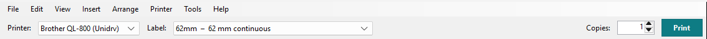

Your first label
A shelf label on 62 mm continuous tape (e.g. DK-22205, in the US DK-2205): choose the format, type the text, move it into place, print.
-
Start QL Label Maker
In the Start menu, click QL Label Maker. Or click Label Maker in QL Label Formats; right-clicking a format offers Design a label on this format...
It opens on the printer chosen in QL Label Formats and on that printer's default label format. On a USB printer, a new empty label switches to a format that fits the loaded roll.
-
Choose the printer and the label
At the top, choose the printer under Printer and the label under Label. The list shows your label formats first, then Brother's papers for this model.

On continuous tape you set any length the printer can print under Length on the right: Label formats and custom lengths.
-
Add text
Click Text on the left. "Text" appears at the top left of the label, and the cursor is already in the Text field on the right. Type your text, for example "Regal 3" as in the pictures.

Below it, set the Font and the Size (pt); B for bold is in the toolbar at the top. More in Artistic and paragraph text.
-
Move it into place
Drag the text with the mouse. It snaps to the label's edges and centre lines and to the edge of the printable area; a pink guide shows where. The handles make a single-line text larger or smaller.
The printer can't print on hatched areas.
-
Print
Set the number of Copies, then click Print.

On a USB printer, QL Label Maker first asks the printer for the loaded roll. If it doesn't fit the label, you learn this before printing. More in Printing.